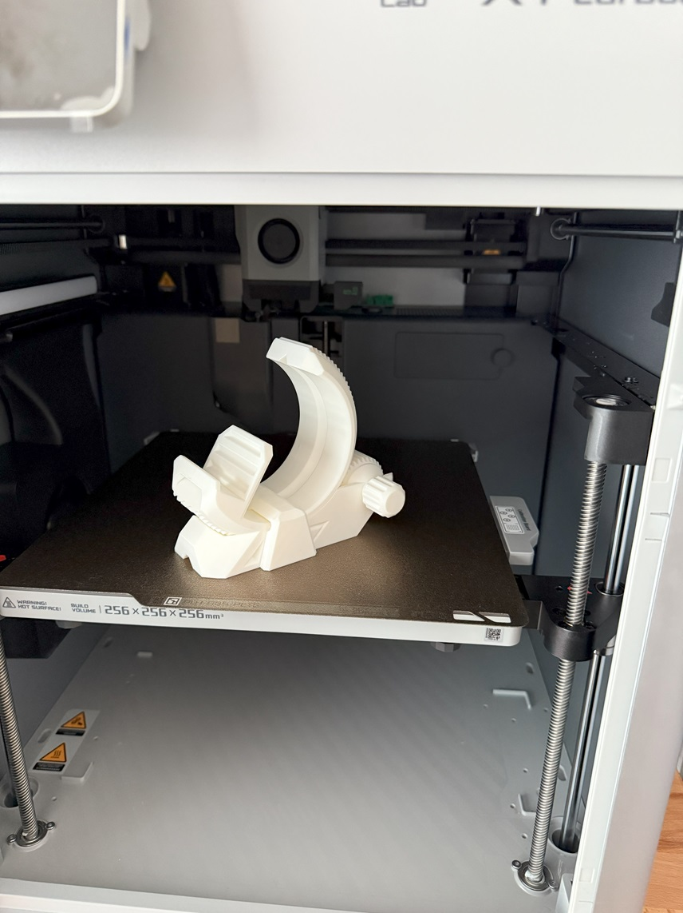
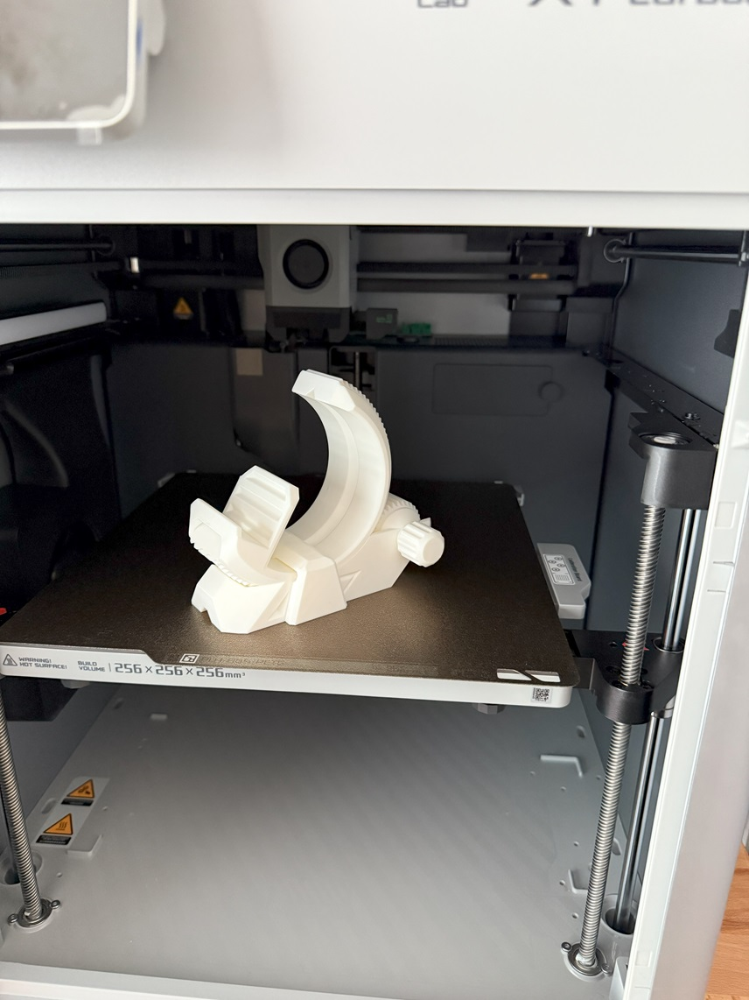
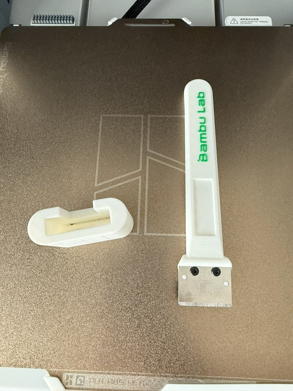
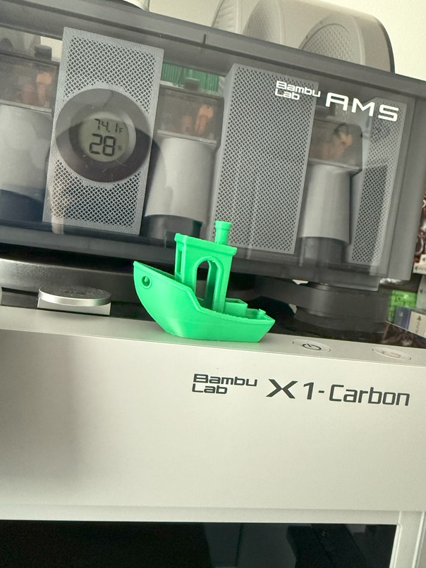
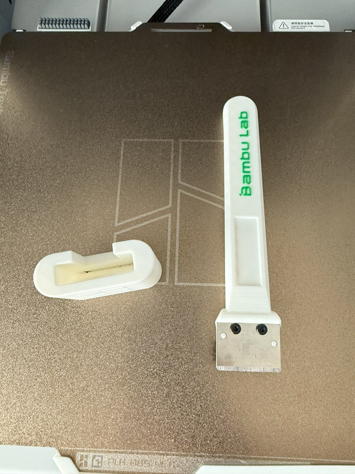
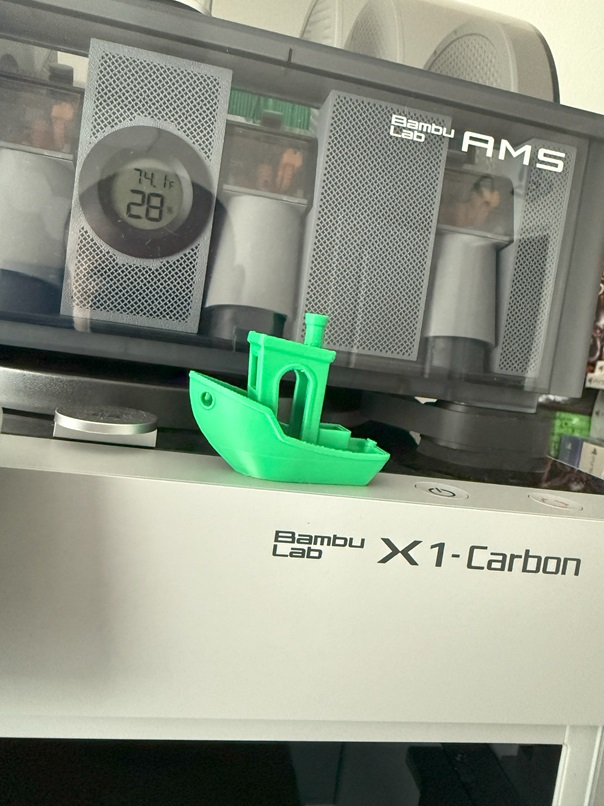

About me and my 3d Printing Journey
Hi I'm Mark Francisco, Im new to 3d printing but I want to share my Journey with you guys. These are designs that came from Bambu Labs app or website.
Images
 

 



The white Vase is what my sister was looking for so I looked up online and printed one for her.
The white moon shaped phone stand is a nice stand but the only bad thing about it is if you over turn the knob, the dial will come off as it does not have any stopper. I am going to modify it to be able to stop it
Swatch holder is the one I printed to hold all the colored swatches included in the A1 combo
Scraper from the internal storage of the printer. This one of the fist things you should print before somebody starts printing on any machine
Ofcourse! A Benchie! this is always the first one to be printed on every 3d printers for some reason. Why? I really have no clue but im going to find the reason why.